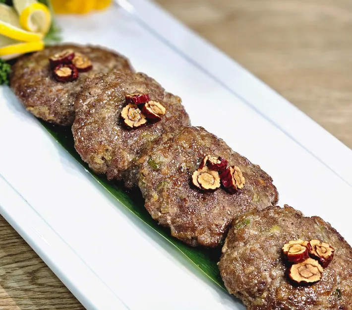
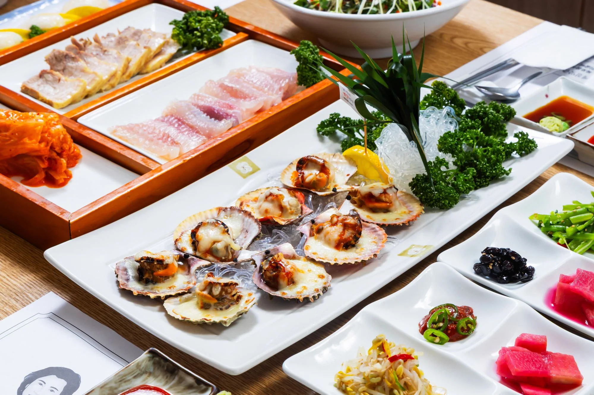

GATHER TOGETHER
좋은 날,
좋은 사람들과
소중한 만남의 순간, 정성으로 차린 한 상을 준비합니다.

MEETING
상견례
두 가족의 첫 만남을 정갈한 한 상으로.
격식을 갖춘 상차림과 조용한 개별 룸에서 대화에 집중하실 수 있도록 준비합니다. 어르신 입맛에 맞는 보리굴비와 남도 음식이 자연스럽게 이야기를 이어 줍니다.
- 양가 인원과 희망 시간을 먼저 알려주세요.
- 낙굴 정식이나 코스 정식 등 메뉴를 미리 정해 두시면 편합니다.
- 조용한 룸으로 배정해 드립니다.

FAMILY
가족 모임
온 가족이 둘러앉는 편안한 자리.
생신, 기념일, 부모님 모시는 날. 아이를 위한 유아 의자와 떡갈비 메뉴, 어르신을 위한 휠체어 이용 좌석까지 세심하게 준비합니다.
- 유아 의자·휠체어 이용이 필요하시면 말씀해 주세요.
- 떡갈비랑 굴비랑 정식은 아이와 함께하기 좋습니다.
- 식사 후 평화광장 산책을 추천합니다.

BUSINESS
접대 · 회식
손님을 모시는 자리, 품격 있게.
목포의 대표 음식인 홍어삼합과 낙지, 활어회로 손님께 목포의 맛을 소개해 보세요. 단체석은 최대 90명까지 이용할 수 있습니다.
- 인원과 예산을 알려주시면 메뉴를 제안해 드립니다.
- 콜키지 가능 (병당 20,000원, 최대 2병).
- 평화광장 무료 공영주차장을 이용하세요.

TRAVEL
목포 여행 식사
목포에서의 하루에 맛있는 기억을 더하다.
평화광장 바로 앞이라 바다분수, 해상케이블카, 삼학도 크루즈와 함께 여행 코스로 들르기 좋습니다. 점심에는 굴비 정식, 저녁에는 낙굴 정식을 추천합니다.
- 주말·여행 성수기에는 예약을 권장합니다.
- 네이버 예약으로 날짜와 인원을 간편하게 정하세요.
- 보리굴비 택배로 여행의 맛을 집까지 이어가세요.

YEAR END
송년회 · 연말 모임
올해의 마지막 모임, 정성 가득한 한 상으로.
고마웠던 사람들과 한 해를 마무리하는 자리. 연말에는 예약이 몰리니 날짜와 인원을 일찍 알려주시면 자리와 메뉴를 넉넉히 준비해 드립니다.
- 12월 주말 저녁은 일찍 마감될 수 있습니다.
- 인원이 많으면 단체석으로 배정해 드립니다.
- 코스 정식(3~4인 160,000원 · 4~5인 200,000원)으로 테이블별 주문이 편합니다.

CATERING
단체 · 행사 도시락
정성 가득한 한 상을 도시락에.
보리굴비, 낙지호롱, 수제 떡갈비를 한 도시락에 담은 목포 프리미엄 한정식 도시락(20,000원). 각종 모임과 행사 도시락으로 준비해 드립니다.
- 수량과 받으실 날짜·시간을 전화로 알려주세요.
- 대량 주문은 미리 상담해 주시면 좋습니다.
- 포장 주문도 가능합니다.
PRIVATE DINING
편안하게 모이는
예향의 자리
룸·별실 12실과 최대 90명까지 이용 가능한 단체석을 갖추고 있습니다. 방문 인원에 맞는 자리와 메뉴는 예약 전 전화로 확인해 주세요.
전화 예약 문의01날짜 · 인원
모임 날짜와 예상 인원을 먼저 알려주세요.
02메뉴 · 공간
목적에 맞는 메뉴와 룸을 상담으로 안내합니다.
03예약 확정
매장 확인 후 최종 확정 연락을 드립니다.